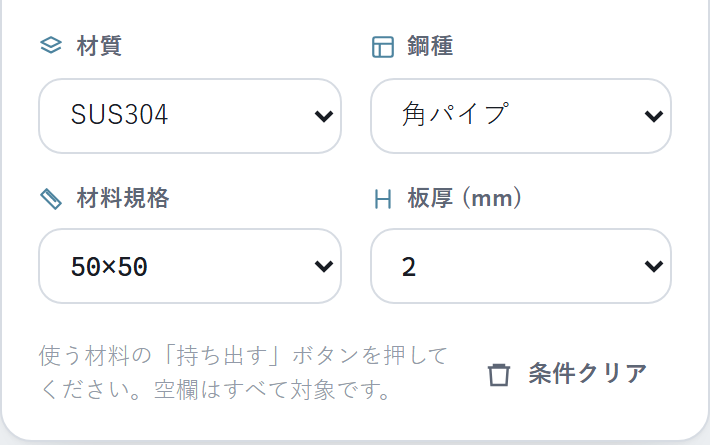
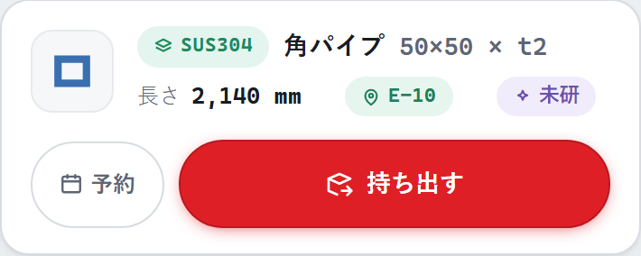
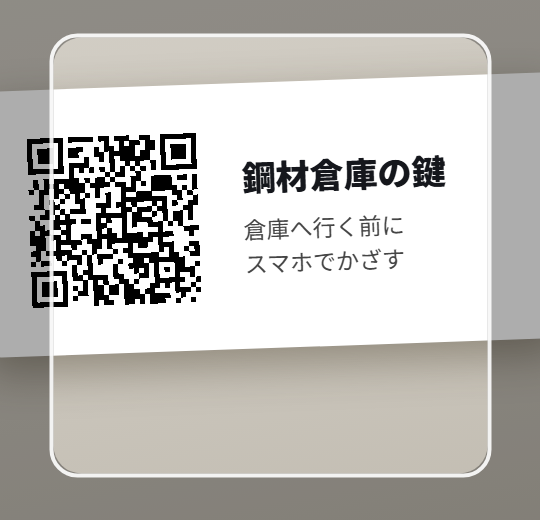
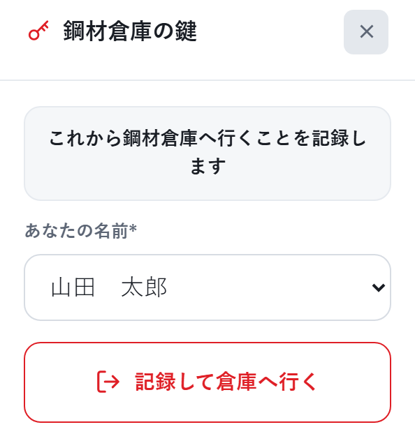
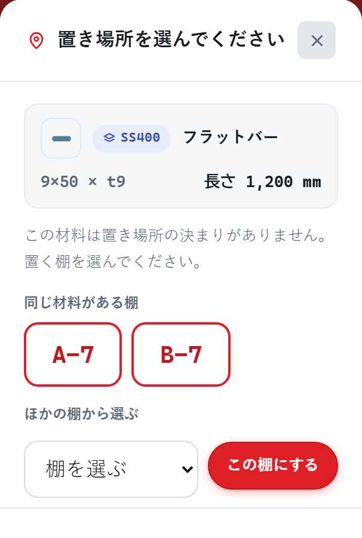
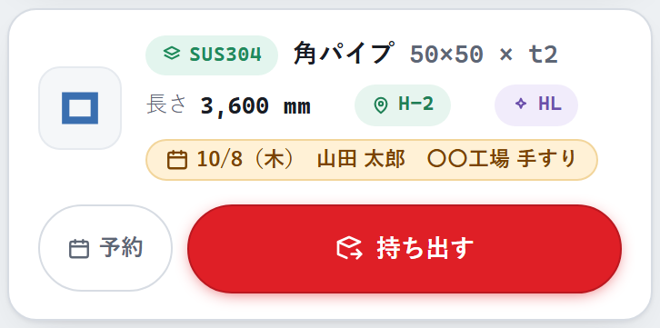
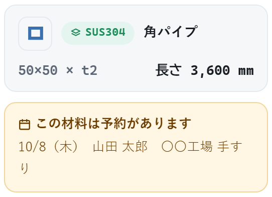

鋼材在庫システム 使い方マニュアル
かざすだけQRスキャン対応版 ／ Hướng dẫn sử dụng（アプリはベトナム語表示に切替できます）
アドレスはこれ1つ
https://kouzaizaiko.wataru419.com/
PC・スマホ共通
社内Wi-Fiのみ
このマニュアルは、やりたいこと別になっています
1
在庫があるか確認する
欲しい材料が倉庫にあるか、長さ・置き場所をスマホで調べる／Kiểm tra tồn kho
→ 2ページ
2
在庫を使う
鍵置き場のQRにかざして倉庫へ → 使った後の残りの長さを登録する／Dùng vật liệu
→ 3〜4ページ
3
新しい在庫を登録する
今日納入された定尺の残りなど、リストに無い材料を登録する／Đăng ký vật liệu mới
→ 5ページ
4
材料を予約する
使う材料がかぶらないように、誰が・いつ・どの案件で使うかを予約する／Đặt trước vật liệu
→ 6ページ
5
定尺から残材まで（プログラム室 → 指示書 → 現場）
プログラム室で登録してQRラベルを印刷 → 指示書で回す → 加工後に長さだけ更新。管理者向け（作業ログの修正）もここ
→ 7〜8ページ
はじめる前に（各スマホで最初の1回だけ）
1
スマホを社内Wi-Fiにつなぎ、右のQRを読んでページを開く（警告は出ません。設定も不要）
3
名前は最初に1回選ぶだけ（次からは自動）。ベトナム語にする人は右上の「Tiếng Việt」を押す
前のアドレス（192.168.1.107）で使っていた人へ：前のホーム画面のアイコンや、材料に貼ってあるQRラベルからも、自動でこのアドレスに切り替わります。アドレスが変わったので、名前・言語・カメラの許可だけ最初の1回やり直してください。
https://
kouzaizaiko.wataru419.com/
鋼材在庫システム（社内のみ）
スマホのカメラで読み取り
1
在庫があるか確認する
Phần 1: Kiểm tra xem có tồn kho hay không
1
アプリを開く（スマホは最初からこの画面）。ここが在庫の一覧です
2
材質・鋼種で絞り込む。「材料規格」と「板厚」は一覧から選びます（別々に指定できます）。一覧には、在庫にあるものだけが出ます
【拡大】絞り込み欄（空欄はすべて対象）

3
カードを見る。1枚 ＝ 材料1本。長さ・置き場所（棚番号）・仕上げが分かります
【拡大】在庫カードの見方

この材料は「SUS304の角パイプ 50×50・板厚t2、長さ2,140mm、置き場所E-10、仕上げ未研」という意味です。左の「予約」は6ページ
PCも同じアドレスでOK。「在庫検索」タブなら、もっと細かい絞り込みと合計重量・合計金額の集計ができます。
カードに出てこない＝在庫なしです。よく使う材料が無くなりそうなときは、早めに発注担当へ連絡を。
材料そのものに貼ってあるQRラベルにスマホをかざすと、その材料の画面が直接開くので探す手間もありません。
2
在庫を使う（前半）〜 まず倉庫の鍵を借りる
Phần 2a: Mượn chìa khóa kho — quét QR tại chỗ treo chìa khóa
1
プログラム室の鍵置き場へ。鍵のフックの横に、この「鋼材倉庫の鍵」のQRの貼り紙が貼ってあります
2
スマホでアプリを開き、赤い「QRを読み取る」を押してカメラを起動 → 貼り紙にかざす（枠に入れるだけ・シャッター不要）
3
「鋼材倉庫の鍵」画面が開くので、名前を確認（前回の名前が自動で入っています）して「記録して倉庫へ行く」を押す
4
フックから鍵を取って倉庫へ！これで「誰がいつ倉庫に入ったか」が自動で記録されます
帰ってきたら：鍵をフックに掛けるだけ。アプリの操作はいっさいありません（返却ボタンはそもそも無し）。
うまく読み取れないときは、ふつうのカメラアプリで貼り紙にかざして、出てきたリンクを開いてもOKです。
【手順2】貼り紙にかざす

【手順3】この画面が出たら押すだけ

3
新しい在庫を登録する 〜 納入材の残りなど
Phần 3: Đăng ký vật liệu mới (phần thừa của thanh mới nhập)
今日納入されたばかりの定尺を使って残りが出たときなど、まだQRラベルが無い材料はここから在庫に登録します。
2
材料の情報を選ぶ：材質 → 鋼種 → 板厚 → 材料規格（例：50×50）。選んだ材料に実在する板厚・規格・仕上げだけが出ます。サニタリーパイプは規格を入れると板厚が自動で入ります
4
名前を確認して「登録する」。どこに直すか（例：C-2）が大きく出るので、その棚に置いて完了
置き場所はふつう選ばなくてOK。登録すると自動で決まって表示されます。
置き場所の決まりが無い材料のときだけ 〜 棚を選ぶ
【拡大】置き場所を選ぶ画面

SS400 など、棚の決まりが無い材料を登録すると「置き場所を選んでください」が出ます。
1
「同じ材料がある棚」のボタンを押す。同じ材料（材質・鋼種）がもう置いてある棚が、大きいボタンで出ます（同じ規格がある棚が先）
2
ほかの棚に置くときは、「ほかの棚から選ぶ」の一覧で棚を選んで「この棚にする」
3
どこに置けばいいか分からないときは、「わからない（武田・航に確認）」。置き場所は空欄のまま登録されるので、武田・航に聞いてください
右上の × を押すと、登録はされずに入力画面に戻ります。選んだ棚は登録に入り、いつもの「〇〇になおしてください」が出ます。
4
材料を予約する 〜 誰が・いつ・どの案件で使うか
Phần 4: Đặt trước vật liệu — ai, khi nào, cho công trình nào
使う材料がほかの人とかぶらないように、使う予定の材料に「予約」を入れておけます。入れるのは名前・予約日・案件名の3つだけです。
1
使う材料の「予約」ボタンを押す（スマホは持ち出し画面のカード、PCは「在庫検索」の表）
2
名前・予約日・案件名を入れて「予約する」（案件名は前に入れたものが候補に出ます）
3
予約した材料には黄色い「予約」の印（予約日・名前・案件名）が付きます
【拡大】予約が入っている材料

4
ほかの人がその材料を持ち出そうとすると、「この材料は予約があります」と出ます。持ち出し自体は止まりません。予約した人に一声かけてください
予約は自動で消えます。予約した本人がその材料を持ち出したとき（使ったとき）と、予約日を過ぎたとき。取り消すときは、材料の「予約」ボタン（入っている予約の横の「取り消す」）か、PCの「予約」メニューから。
【拡大】持ち出すときの表示

予約の一覧（PCのメニュー「予約」）
誰が・いつ・どの案件で・どの材料を使う予定かが、予約日の早い順に出ます。ここから「取り消す」もできます。メニューの「予約」の横の数字は、いま入っている予約の数です。
スマホは持ち出し画面だけのかんたん表示なので、一覧はPCで見てください。
5
定尺から残材まで 〜 プログラム室 → 指示書 → 現場
Phần 5: Từ thanh nguyên đến phần thừa — phòng lập trình → phiếu chỉ thị → xưởng
QRラベル（シール）とプリンターはプログラム室だけに置きます。ラベルには長さを印刷していないので、定尺のときに貼るラベルが、切ったあとの残材にもそのまま使えます。
プログラム室① 新規登録
プログラムを作るときに、使う定尺を在庫管理 →「新規登録」（管理者モード）。登録した材料には自動でチェックが入る
→
プログラム室② QRラベル印刷
「選んだものをQRラベル印刷」。印刷先は「QL-800 62mm長尺テープ（長さ24mm）」、印刷画面の用紙サイズは「62mm」
→
プログラム室③ 指示書に付けて回す
ラベルは台紙からはがさずにテープやクリップで指示書に留める（あとで鋼材にきれいに貼れる）
→
現場④ 長さだけ更新して片付け
レーザー加工後、指示書のQRを読む →「一部使った（残りを登録）」→ 測った残りの長さ → 置き場所が出る → ラベルを鋼材に貼ってその棚へ。残りが出なければ「全部持ち出す」
選んだ材料だけQRラベルを印刷する管理者・PC
1
管理者モードで「在庫管理」を開き、印刷したい材料の左のチェックを入れる（新規登録した材料は最初から入っています）
2
多いときは上の絞り込み欄で探す（No.・材質・規格・置き場所など。例「sus304 角パイプ 50×50」）。見出しのチェックで、表に出ている分をまとめて選べます
3
「選んだものをQRラベル印刷」→ 印刷先を選んで「印刷」。初めての印刷先のときは、印刷画面で選ぶ用紙サイズの確認が出ます
4
印刷後の「印刷済みの目印を付けますか？」で OK。QR欄が「✔済」になり、チェックは外れます
「QRラベル」ボタン（全部）・各行のQRボタン（1件）・「未印刷のみ」も、これまでどおり使えます。ラベルプリンター（QL-800）の設定は docs/ラベルプリンター設定手順（QL-800）.txt を見てください。